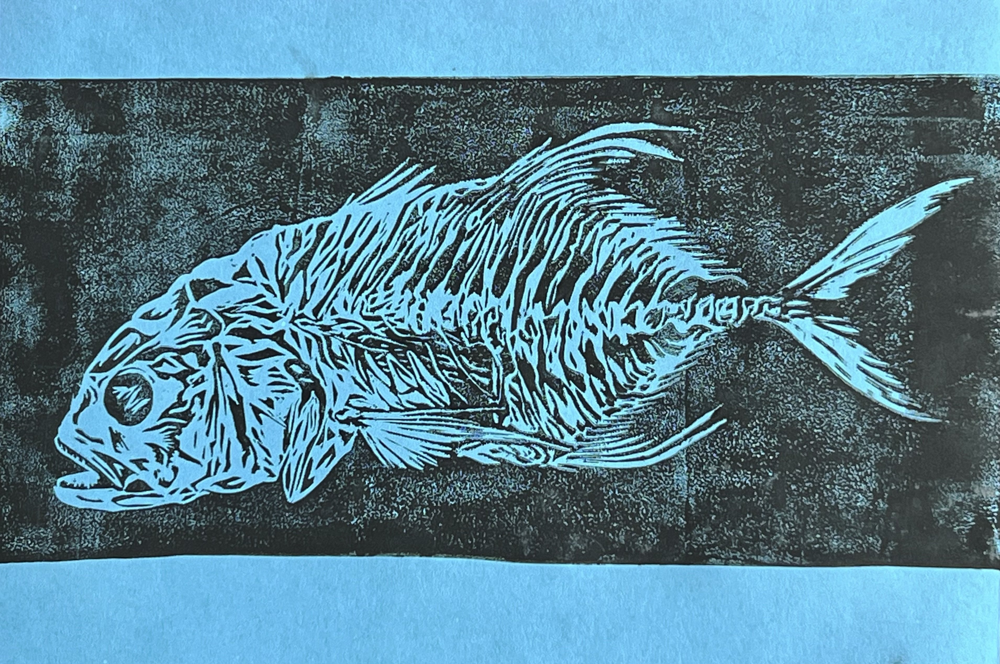
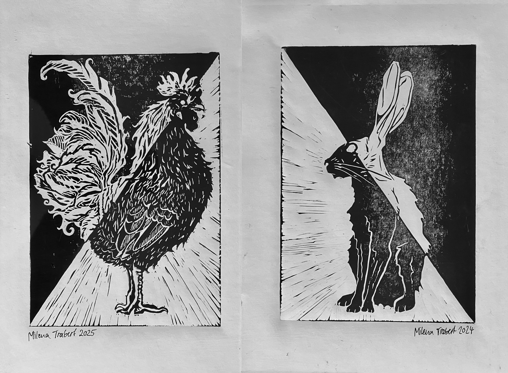
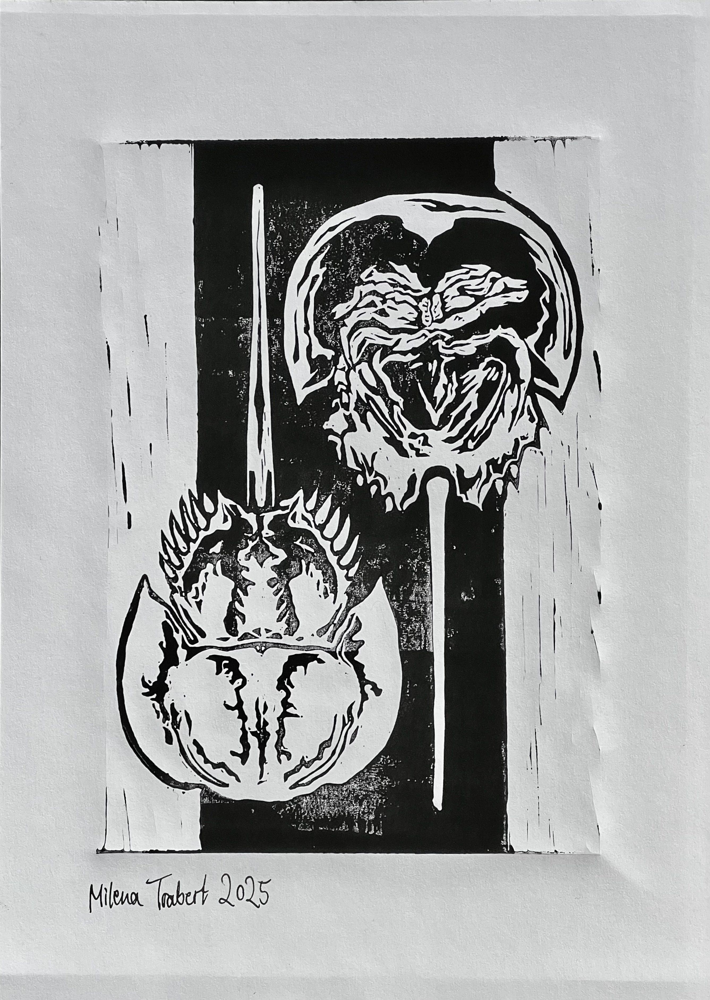

first print at Syfestivalen
beetle bookmark
Fish skeleton (as seen at the Vienna natural history museum)
This is traced directly from a fish skeleton that I took a picture of in the Vienna Natural History museum. That entire marine exhibition was so good and artistic in general.
Water-based lino ink on A5 blue paper
Rabbit & Rooster
These were done like six months apart but are intended as a matching set.
water-based lino ink on A4 mixed media paper
Horseshoe crabs
Inspired by the specimen from the uppsala zoology museum that's in the window in the wall between the museum locker room and the biology library.
water-based lino ink on A4 mixed media paper